1032A12 TIMING SYSTEM DRIVE CHAIN - R.R
- Path
- Procedures > 10 ENGINE > 1032 TIMING SYSTEM > 1032A CHAIN TIMING SYSTEM > 1032A12 TIMING SYSTEM DRIVE CHAIN - R.R
- Kind
- repair procedure (removal / refitting; the operation number is the code)
- Applies to
- engines: 2.2; all production periods
- Interactive page
- https://sloeber94.github.io/elrnDB-fCrm/en/#/194000271
Applies to: engines: 2.2; all production periods
 Removing
Removing
 Refitting
Refitting- Position the vehicle on a lift.
- Make sure that the ignition key is in the OFF position, then disconnect the battery terminal (-).
Description | Connector | |
|---|---|---|
- | Battery |
1. Remove the sound insulation cover fastened to the engine by three pins.
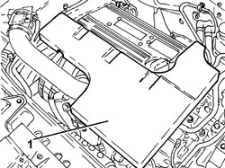
Applies to: engines: 2.2; all production periods
1. Loosen the band and disconnect the engine oil vapour recovery pipe from the cylinder head cover.
2. Loosen the bands and remove the air supply hose from the air flow meter to the throttle casing.
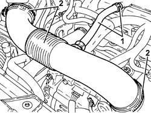
Applies to: engines: 2.2; all production periods
1. Disconnect the electrical connection from the air flow meter.
Description | Connector | |
|---|---|---|
1 | Air flow meter |
2. Undo the bolts (2a) and remove the air filter cover (2b), complete with air flow meter (2c).
3. Remove the air cleaner filter element.
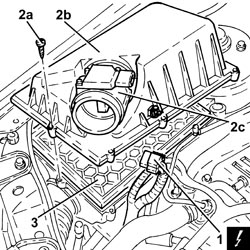
Applies to: engines: 2.2; all production periods
1. Release the fuel vapour pipe (1a) from the band (1b) on the air filter casing.
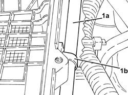
Applies to: engines: 2.2; all production periods
1. Disconnect the cold air intake from the air filter casing.
2. Remove the air filter casing fastened to the bodyshell by three pins.
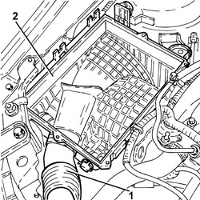
Applies to: engines: 2.2; all production periods
1. Connect the tool to the bleed valve on the fuel supply pipe and discharge the fuel pressure.
Tool | Description | Function | Validity |
|---|---|---|---|
2000002900 | Breather connector | Fuel system pressure drainage | 1.8 2.2 |
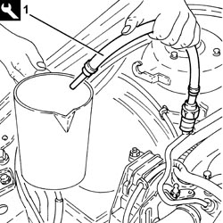
Applies to: engines: 2.2; all production periods
1. Undo the connector (1a), disconnect the fuel supply pipe (1b), fuel manifold pipe side and move it to the side.
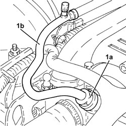
Applies to: engines: 2.2; all production periods
1. Disconnect the rapid connector for the fuel vapour pipe and move aside.
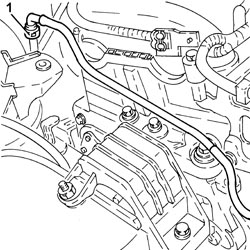
Applies to: engines: 2.2; all production periods
1. Disconnect the electrical connection from the ignition coil module.
Description | Connector | |
|---|---|---|
1 | Ignition coil | See A030 IGNITION COIL |
2. Undo the bolts (2a) and remove the ignition coil module (2b).
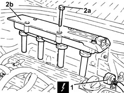
Applies to: engines: 2.2; all production periods
1. Undo the nut (1a), loosen the bands and remove the engine coolant return pipe to the supply reservoir (1b).
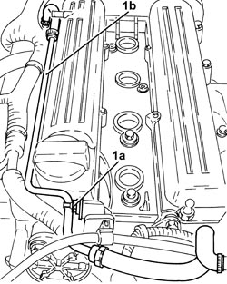
Applies to: engines: 2.2; all production periods
1. Disconnect the electrical connection for the front Lambda sensor to the catalytic converter.
Description | Connector | |
|---|---|---|
1 | Lambda sensor on catalyzer |
2. Disconnect the electrical connection for the rear Lambda sensor to the catalytic converter.
Description | Connector | |
|---|---|---|
2 | Lambda sensor on catalyzer - 2 |
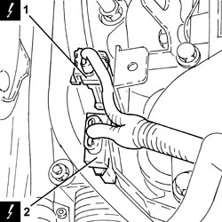
Applies to: engines: 2.2; all production periods
1. Unscrew the bolts securing the timing side engine wiring brackets.
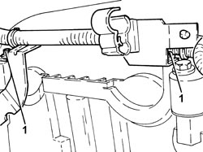
Applies to: engines: 2.2; all production periods
1. Unscrew the bolts securing the cam cover side engine wiring brackets.
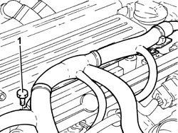
Applies to: engines: 2.2; all production periods
1. Release the gearbox side engine wiring bracket from its fastenings.
2. Move the engine wiring to the side.
3. Disconnect the electrical connection for the radio interference condenser.
Description | Connector | |
|---|---|---|
3 | Interference filter |
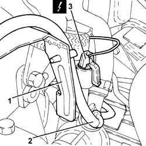
Applies to: engines: 2.2; all production periods
1. Undo the nut (1a) and disconnect the earth lead (1b) from the cam cover.
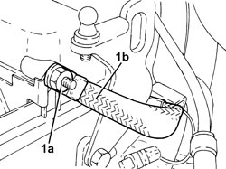
Applies to: engines: 2.2; all production periods
1. Undo the bolts (1a) and remove the cam cover (1b).
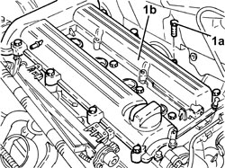
Applies to: engines: 2.2; all production periods
- Remove the spark plugs to facilitate the subsequent engine cranking operations.
Op. 4450B04 RIGHT FRONT WHEEL - R.R
Op. 7055B66 ENGINE COMPARTMENT DUST COVER IN RIGHT FRONT WHEEL ARCH - R.R.
1. Use tool (1a) to adjust the mobile tensioner in the arrowed direction in the figure and prise off the auxiliary drivebelt (1b).
Tool | Description | Function | Validity |
|---|---|---|---|
1860815000 | Flange | Crankshaft rotation | 1.8 |
2. Turn the crankshaft to move cylinder no. 4 to TDC in the combustion phase. Under these conditons, notch (2a) on the inner part of the crankshaft pulley should be aligned with the reference mark (2b) on the timing chain cover.
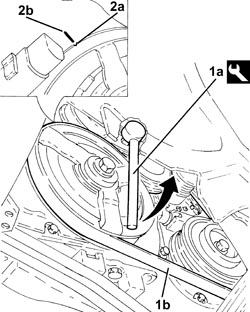
Applies to: engines: 2.2; all production periods
1. Undo the bolts (1a) and remove the timing chain upper pad (1b).
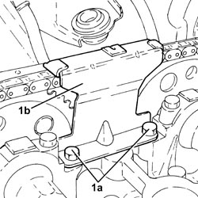
Applies to: engines: 2.2; all production periods
1. Unscrew and remove the automatic timing chain tensioner.
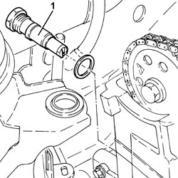
Applies to: engines: 2.2; all production periods
1. If no mark (1b) is present on the fixed timing chain hydraulic tensioner (1a), replace the tensioner with a new unit including a new mobile chain tensioner pad.
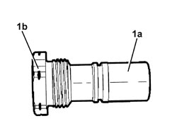
Applies to: engines: 2.2; all production periods
1. Loosen the bolts fixing the camshaft toothed drive pulleys.
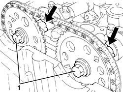
Applies to: engines: 2.2; all production periods
1. Fit the tool and check the camshaft timing setting is correct.
Tool | Description | Function | Validity |
|---|---|---|---|
2000000900 | Template | Camshaft timing adjustment | 2.2 |
- Remove the timing tool.
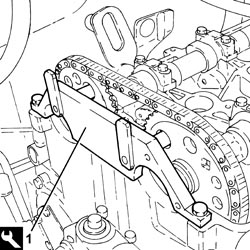
Applies to: engines: 2.2; all production periods
1. Fully loosen the bolts fixing the camshaft toothed drive pulleys.
- Secure the timing chain to prevent it falling into the casing.
2. Remove the camshaft toothed drive pulleys.
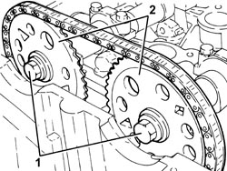
Applies to: engines: 2.2; all production periods
1. Undo the nuts (1a) and disconnect the front section of the exhaust pipe (1b), catalytic converter side.
2. Remove the gasket.
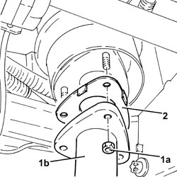
Applies to: engines: 2.2; all production periods
1. Undo the bolts (1a), (1b) and remove the bracket on the gearbox for the lower reaction rod (1c).
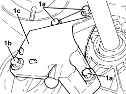
Applies to: engines: 2.2; all production periods
1. Unscrew the left engine mount flexible block bolt, front suspension frame side.
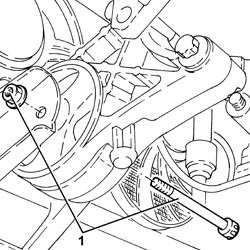
Applies to: engines: 2.2; all production periods
1. Fit the tool (1a) complete with support mountings (1b).
Tool | Description | Function | Validity |
|---|---|---|---|
1820581000 | Crossmember | Power unit support | 1.8 2.2 |
Tool | Description | Function | Validity |
|---|---|---|---|
1870650000 | Support blocks | Power unit support | 1.8 2.2 |
2. Fit the tools (2a) and (2b), then connect them to the brackets on the engine using links (2c).
Tool | Description | Function | Validity |
|---|---|---|---|
1860851003 | Crossmember | Power unit support | 1.8 2.2 |
Tool | Description | Function | Validity |
|---|---|---|---|
1870748000 | Vertical support | Power unit support | 1.8 2.2 |
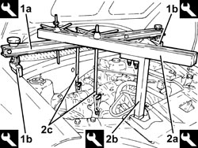
Applies to: engines: 2.2; all production periods
1. Undo the bolts (1a) and the nut (1b) and remove the flexible mounting for the timing side power unit front support (1d).
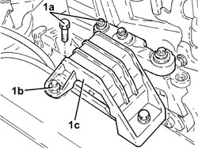
Applies to: engines: 2.2; all production periods
Adjust the equipment links to raise the power unit far enough to gain access to the power unit rigid mount bolts, timing side.
1. Undo the bolts (1a) and remove the power unit rigid support (1b).
2. Undo the bolt (2a) and remove the engine components single belt moving tensioner (2b).
3. Undo the plug for access to the upper bolt securing the chain tensioner fixed pad.
4. Undo the upper belt tensioner fixed pad fixing bolt.
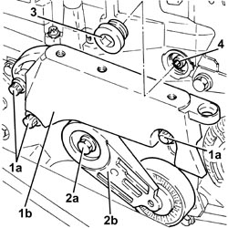
Applies to: engines: 2.2; all production periods
1. Unscrew the upper bolts fixing the timing cover.
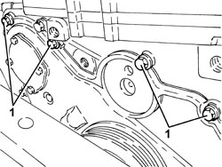
Applies to: engines: 2.2; all production periods
1. Undo the drain plug and drain the engine oil.
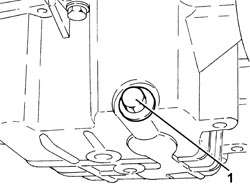
Applies to: engines: 2.2; all production periods
1. Undo the nut (1a) securing the crankshaft pulley using the tool (1b) for counter-torque.
Tool | Description | Function | Validity |
|---|---|---|---|
2000001000 | Counter-torque | Loosen/tighten crankshaft pulley fixing bolt | 2.2 |
2. Remove the crankshaft pulley.
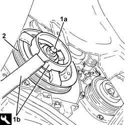
Applies to: engines: 2.2; all production periods
1. Undo the bolts (1a) and remove the timing chain cover (1b).
2. Remove the gasket.
- Working at the bench, remove the oil seal from the timing chain cover.
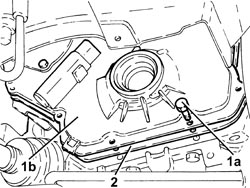
Applies to: engines: 2.2; all production periods
1. Undo the lower bolt (1a) and remove the belt tensioner fixed pad (1b).
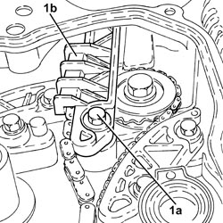
Applies to: engines: 2.2; all production periods
1. Undo the belt tensioner mobile pad fixing bolt.
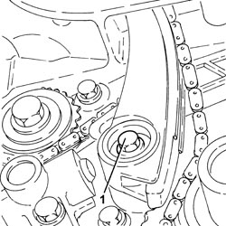
Applies to: engines: 2.2; all production periods
- Remove the chain tensioner mobile pad by withdrawing from below.
- Remove the timing chain after releasing it from the retaining collar positioned previously.
Applies to: engines: 2.2; all production periods
Refitting
Removing- Refit the timing chain provisionally in its seat.
- Refit the chain tensioner mobile pad.
1. Tighten the chain tensioner pad retaining bolt to the recommended torque.
Component | Fastening | dia | Value (daNm) | Validity |
|---|---|---|---|---|
Timing moving chain tensioner pad | Bolt | M6 x 1 | (engine crankcase side) 1.0 | 2.2 |

Applies to: engines: 2.2; all production periods
1. Refit the chain tensioner fixed pad (1a) and secure by tightening the lower bolt (1b) and upper bolt through the hole to the specified torque.
Component | Fastening | dia | Value (daNm) | Validity |
|---|---|---|---|---|
Timing fixed chain tensioner pad | Lower bolt | M6 x 1 | (engine crankcase side) 1.0 | 2.2 |
Component | Fastening | dia | Value (daNm) | Validity |
|---|---|---|---|---|
Timing fixed chain tensioner pad | Upper bolt | M6 x 1 | (cylinder head side) 0.8 | 2.2 |

Applies to: engines: 2.2; all production periods
1. Place the intake side camshaft toothed drive pulley (1a) in its housing and secure it with a new bolt (1b) without tightening the bolt.
2. Fit the camshaft timing tools.
Tool | Description | Function | Validity |
|---|---|---|---|
2000000900 | Template | Camshaft timing adjustment | 2.2 |
3. Turn the crankshaft until cylinder 4 is at TDC in the combustion phase, white notch stamped on the timing chain toothed drive pulley turned down and key upward.
4. Fit the timing chain.
5. Place the exhaust side camshaft toothed drive pulley (5a) in its housing and secure it with a new bolt (5b) without tightening the bolt.
- Move back the camshaft timing tool pin from the intake side camshaft toothed timing drive pulley.
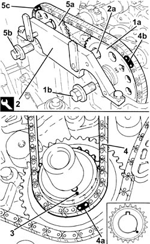
Applies to: engines: 2.2; all production periods
- The following drawing shows the fixed timing chain hydraulic tensioner disassembled.
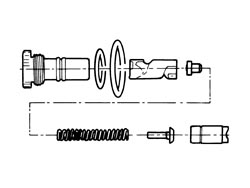
Applies to: engines: 2.2; all production periods
- Before refitting, the timing chain hydraulic tensioner must be preloaded as described below.
1. Position the piston in a vice with protective jaws, holding by the square end.
2. Inser the piston into the tensioner case by pressing and turning as shown in the figure until pin (2a) fits into groove (2b).
3. Press and simultaneously turn the piston until pin (3a) fits into groove (3b).
- Insert the assembled piston into the tensioner body.
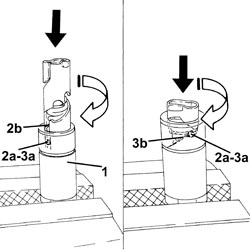
Applies to: engines: 2.2; all production periods
1. Refit the timing chain hydraulic tensioner into its seat and tighten to the specified torque.
Component | Fastening | dia | Value (daNm) | Validity |
|---|---|---|---|---|
Timing fixed hydraulic tensioner | - | M27 x 2 | 7.5 | 2.2 |
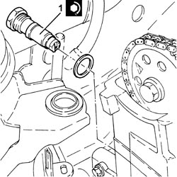
Applies to: engines: 2.2; all production periods
1. Hydraulic tensioner in operational position.
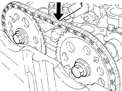
Applies to: engines: 2.2; all production periods
- Turn the crankshaft through 720°, then move cylinder no. 4 to TDC in the exhaust phase, white notch stamped on the timing belt toothed drive pulley turned down and key upward.
- Check the timing by ensuring that the tool pins are aligned with the holes on the camshaft drive pulleys.
- Remove the tool.
Tool | Description | Function | Validity |
|---|---|---|---|
2000000900 | Template | Camshaft timing adjustment | 2.2 |
1. Place the upper timing chain pad (1a) in its housing and fasten it tightening the bolts (1b) to the recommended torque.
Component | Fastening | dia | Value (daNm) | Validity |
|---|---|---|---|---|
Timing upper chain tensioner pad | Bolt (with thread-locking agent) | M6 x 1 | (cylinder head side) 1.0 | 2.2 |
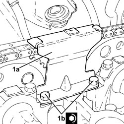
Applies to: engines: 2.2; all production periods
1. Tighten the new camshaft toothed pulley bolts to the specified torque, first tightening the exhaust side pulley bolt.
Component | Fastening | dia | Value (daNm) | Validity |
|---|---|---|---|---|
Camshaft toothed drive pullies | Bolt (to be replaced) | M12 x 1.75 | (camshaft side) 8.5 + 30° + 15° | 2.2 |
- Fit the spark plugs and tighten them to the recommended torque.
Component | Fastening | dia | Value (daNm) | Validity |
|---|---|---|---|---|
Spark plugs | - | M14 x 1.25 | (cylinder head side) 2.2 | 2.2 |
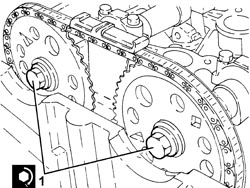
Applies to: engines: 2.2; all production periods
- Clean the contact surfaces.
1. Refit a new gasket (1a) and the timing chain cover (1b).
2. Tighten the timing chain cover bolts to the specified torque, first tightening the lower bolts and then the upper bolts.
Component | Fastening | dia | Value (daNm) | Validity |
|---|---|---|---|---|
Crankshaft oil seal front cover | Bolt | M8 X 1.25 | (engine crankcase side) 2.1 | 2.2 |
Applies to: engines: 2.2; all production periods
- Replace the access plug to the upper belt tensioner bolt in its seat and tighten to the specified torque.
Component | Fastening | dia | Value (daNm) | Validity |
|---|---|---|---|---|
Cap for timing fixed chain tensioner pad upper bolt | - | M22 x 1.5 | 6.5 | 2.2 |
1. Fit a new oil seal (1a) on the timing chain cover using the tool (1b).
Tool | Description | Function | Validity |
|---|---|---|---|
1860099000 | Fitting tool | Fitting flywheel side oil seal | 2.2 |
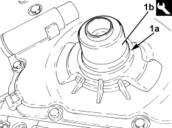
Applies to: engines: 2.2; all production periods
1. Place the crankshaft pulley in its housing.
2. Tighten a new bolt (2a) securing the crankshaft pulley to the recommended torque using the tool (2b) for counter-torque.
Component | Fastening | dia | Value (daNm) | Validity |
|---|---|---|---|---|
Services pulley on crankshaft | Bolt (to be replaced) | M14 X 1.5 | (engine crankshaft side) 10.0 +75° + 15° | 2.2 |
Tool | Description | Function | Validity |
|---|---|---|---|
2000001000 | Counter-torque | Loosen/tighten crankshaft pulley fixing bolt | 2.2 |
Applies to: engines: 2.2; all production periods
1. Position the auxiliary drivebelt moving tensioner (1a) in its housing and secure it tightening the bolt (1b) to the recommended torque.
Component | Fastening | dia | Value (daNm) | Validity |
|---|---|---|---|---|
Engine components single belt moving tensioner | Bolt | M10 x 1.5 | (engine crankcase side) 4.3 | 2.2 |
2. Place the power unit timing side rigid support (2a) in its housing and secure it by tightening the bolts (2b) to the recommended torque.
Component | Fastening | dia | Value (daNm) | Validity |
|---|---|---|---|---|
Timing side power unit rigid support | Bolt | M12 x 1.75 | (engine crankcase side) 7.5 - 8.5 | 2.2 |
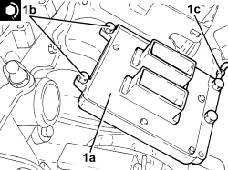
Applies to: engines: 2.2; all production periods
- Raise the power unit by means of the support tool links.
1. Place the timing power unit front support flexible mounting (1a) in its housing and secure it tightening the bolts (1b) and (1c) and the nut (1d) to the recommended torque.
Component | Fastening | dia | Value (daNm) | Validity |
|---|---|---|---|---|
Timing side power unit rigid support flexible mounting | Bolt | M10 | (rigid support side) 5.0 - 6.0 | 1.8 2.2 1.9 JTD 16v 1.9 JTD 8v |
Component | Fastening | dia | Value (daNm) | Validity |
|---|---|---|---|---|
Timing side power unit rigid support flexible mounting | Bolt | M10 | (bodyshell side) 5.0 - 6.0 |
Component | Fastening | dia | Value (daNm) | Validity |
|---|---|---|---|---|
Timing side power unit rigid support flexible mounting | Nut | M10 | (bodyshell side) 5.0 - 6.0 |
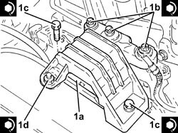
Applies to: engines: 2.2; all production periods
- Remove the tool used to support the power unit.
Tool | Description | Function | Validity |
|---|---|---|---|
1820581000 | Crossmember | Power unit support | 1.8 2.2 |
Tool | Description | Function | Validity |
|---|---|---|---|
1870650000 | Support blocks | Power unit support | 1.8 2.2 |
Tool | Description | Function | Validity |
|---|---|---|---|
1860851003 | Crossmember | Power unit support | 1.8 2.2 |
Tool | Description | Function | Validity |
|---|---|---|---|
1870748000 | Vertical support | Power unit support | 1.8 2.2 |
1. Tighten the engine oil drain plug to the recommended torque.
Component | Fastening | dia | Value (daNm) | Validity |
|---|---|---|---|---|
Engine oil drain plug | - | M12 x 1.75 | (oil sump side) 2.5 | 2.2 |
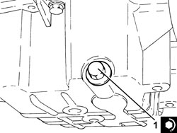
Applies to: engines: 2.2; all production periods
1. Tighten the left engine mount flexible block bolt, front suspension frame side, to the specified torque.
Component | Fastening | dia | Value (daNm) | Validity |
|---|---|---|---|---|
Flexible mounting for left side engine support | Bolt | M12 | (front suspension frame side) 7.5 ÷ 8.5 |
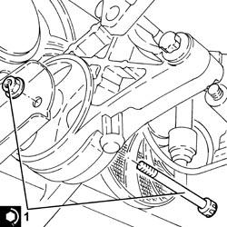
Applies to: engines: 2.2; all production periods
1. Refit the lower reaction rod bracket (1a) in its seat on the gearbox and secure it by tightening the bolts (1b), (1c) to the recommended torque.
Component | Fastening | dia | Value (daNm) | Validity |
|---|---|---|---|---|
Bracket on gearbox for lower reaction rod | Bolt | M12 | (gearbox side) 7.5 - 8.5 |
Component | Fastening | dia | Value (daNm) | Validity |
|---|---|---|---|---|
Lower reaction rod for gearbox | Bolt | M12 | (bracket side on gearbox) 7.5 - 8.5 |
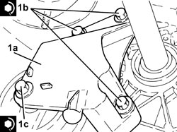
Applies to: engines: 2.2; all production periods
1. Place a new gasket in position.
2. Connect the front section of the exhaust pipe (2a), catalytic converter side and tighten the new nuts (2b) to the recommended torque.
Component | Fastening | dia | Value (daNm) | Validity |
|---|---|---|---|---|
Rigid pipe for exhaust pipe between catalytic converter and silencer | Nut (to replace) | M8 | (exhaust manifold with catalytic converter side) 1.6 | 2.2 |
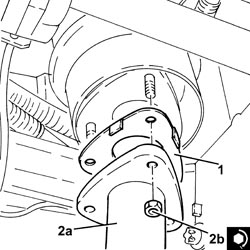
Applies to: engines: 2.2; all production periods
- Refit the auxiliary drivebelt by adjusting the moving tensioner with the tool.
Tool | Description | Function | Validity |
|---|---|---|---|
1860815000 | Flange | Crankshaft rotation | 1.8 |
- Tensioner the tensioner by turning anticlockwise and releasing.
Op. 7055B66 ENGINE COMPARTMENT DUST COVER IN RIGHT FRONT WHEEL ARCH - R.R.
Op. 4450B04 RIGHT FRONT WHEEL - R.R
1. Place the cam cover (1a) in its housing and secure it tightening the bolts (1b) to the recommended torque.
Component | Fastening | dia | Value (daNm) | Validity |
|---|---|---|---|---|
Tappet cover | Bolt | M6 x 1 | (cylinder head side) 0.9 | 2.2 |
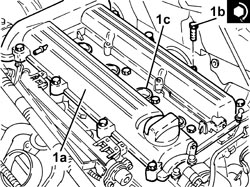
Applies to: engines: 2.2; all production periods
- Connect the earth loom to the cam cover and secure with its nut.
- Connect the electrical connection for the radio interference condenser.
- Refit the engine wiring
- Secure the engine wiring bracket, gearbox side.
- Secure the cam cover engine side wiring brackets with their bolts.
- Secure the timing side engine wiring brackets with their bolts.
- Connect the electrical connection for the rear Lambda sensor to the catalytic converter.
- Connect the electrical connection for the front Lambda sensor to the catalytic converter.
- Place the coolant return pipe to the engine coolant reservoir in position and tighten the bands and the nut.
1. Place the ignition coil module (1a) in its housing and secure it tightening the bolts (1b) to the recommended torque.
Component | Fastening | dia | Value (daNm) | Validity |
|---|---|---|---|---|
Ignition coil module | Bolt | M6 x 1 | (tappet cover side) 0.9 | 2.2 |
2. Connect the electrical connection to the ignition coil module.
Applies to: engines: 2.2; all production periods
- Place the fuel vapour recovery pipe in position and connect the rapid connectors.
1. Place the fuel supply pipe (1a) in its housing, connect it and tighten the connector (1b) to the recommended torque.
Component | Fastening | dia | Value (daNm) | Validity |
|---|---|---|---|---|
Front fuel supply pipe | Connector | - | (fuel manifold side) 1.0 | 2.2 |
Applies to: engines: 2.2; all production periods
- Place the air filter casing in its housing and secure it to the bodyshell using the three pins.
- Connect the cold air intake to the air filter casing.
- Fasten the fuel vapour pipe to the air filter casing using the band.
- Fit the air filter filter element in place.
- Fit the cover for the air filter, complete with air flow meter, and secure it using the bolts.
- Connect the electrical connection to the air flow meter.
- Place the air supply hose from the air flow meter to the throttle casing back in its housing and secure it using the bands.
- Connect the engine oil vapour recovery pipe to the cylinder head cover and secure it using the band.
- Place the sound insulation cover back in its housing and secure it to the engine using the three pins.
- Connect the negative battery terminal.
Op. 0010T11 ENGINE OIL - CHECK LEVEL AND TOP UP, IF NECESSARY
- Remove the vehicle from the lift.
Topics linked from this page (8)
- 0010T11 ENGINE OIL - CHECK LEVEL AND TOP UP, IF NECESSARY
- 4450B04 RIGHT FRONT WHEEL - R.R
- 7055B66 ENGINE COMPARTMENT DUST COVER IN RIGHT FRONT WHEEL ARCH - R.R.
- A001 BATTERY
- K017 LAMBDA SENSOR ON CATALYZER
- K018 LAMBDA SENSOR ON CATALYZER - 2
- K041 AIR FLOW METER
- P087 NOISE FILTER
Topics that link to this page (6)
- H021 STEERING WHEEL OSCILLATIONS / VIBRATIONS / WITH THE VEHICLE STATIONARY
- 0510A20 TIMING GEAR WITH BELT DRIVE - CHECK - CARRY OUT OPERATION WITH CAM COVER(S) REMOVED AND TAPPETS ADJUSTED AND CRANKSHAFT PULLEY DETACHED (IF NECESSARY)
- 1032A10 CHAIN GEARS AND TIMING SYSTEM COMPONENTS R R
- 1088C21 <x>WATER PUMP DRIVE GEAR - R&R</x>
- 1092B91 WATER PUMP BALANCING SHAFT DRIVE CHAIN GEARS AND COMPONENTS R R
- 1092B93 WATER PUMP /BALANCING SHAFT DRIVE CHAIN TENSIONER PADS R R